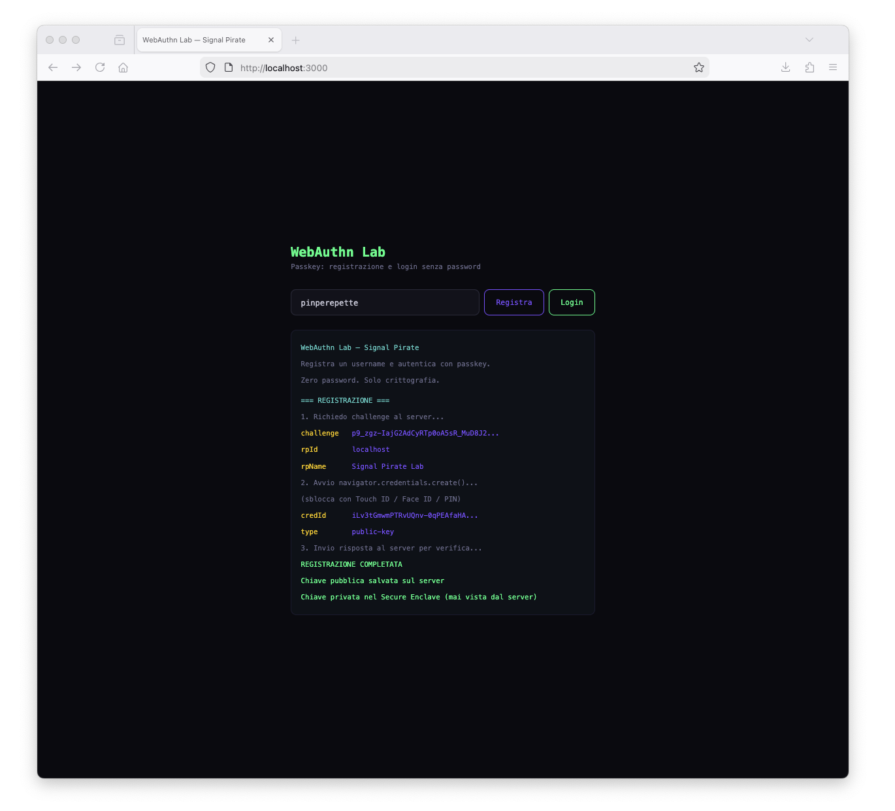
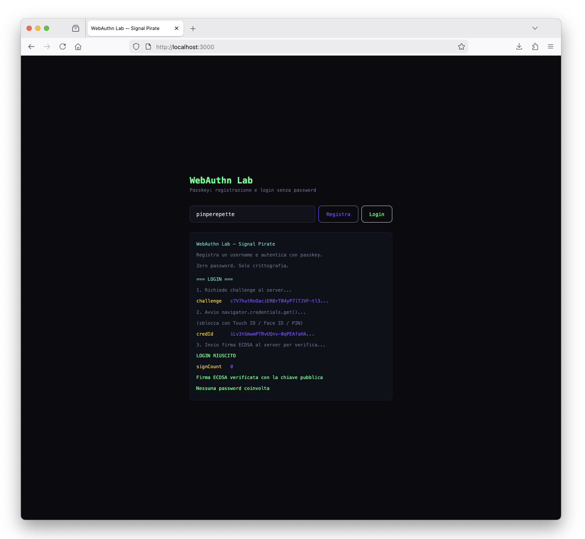
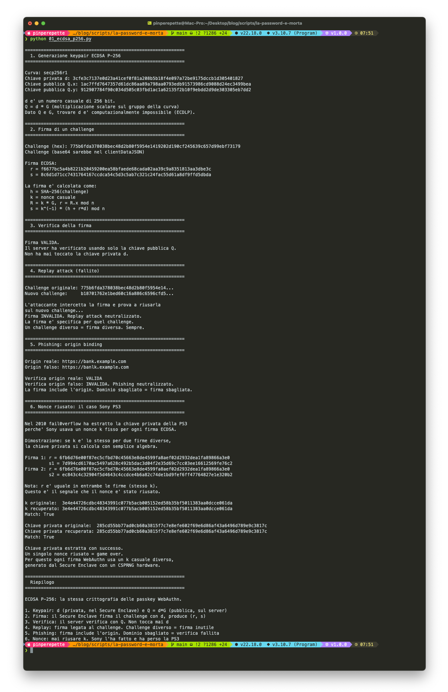

// L'Ennesima Password Dimenticata
Sezione 00. L'antefattoLa iena sta imprecando contro il telefono.
"Non mi fa entrare. Dice password sbagliata."
"Quale account?"
"Quello del sito della spesa. Giuro che era questa."
"Hai provato quella con la maiuscola e il punto esclamativo?"
"Le ho provate tutte. Mi ha bloccato l'account."
Classico. La iena ha una password per il sito della spesa, una per Netflix, una per la banca, e poi tre variazioni della stessa password per tutto il resto. Come il 65% degli utenti internet, secondo uno studio Google del 2019. E quelli che dicono di usare password diverse per tutto mentono, o usano un password manager (che a sua volta e' protetto da una password, il che e' un po' come chiudere la cassaforte e nascondere la chiave sotto lo zerbino).
"Sai cosa? Le password sono morte," le dico. "Il futuro e' un'altra roba."
"Tipo l'impronta?"
"Tipo le passkey. L'impronta e' solo il lucchetto locale. Sotto c'e' una crittografia che rende le password obsolete. Smontiamola."
// Perche' le Password Sono Rotte
Sezione 01. Shared secret, il peccato originale"Ma le password funzionano da 60 anni, perche' dovrebbero essere rotte?" chiede la iena.
Perche' sono un shared secret. Tu conosci la password, e anche il server la conosce (o almeno il suo hash). Il problema e' tutto qui: il segreto e' condiviso.
Quando ti registri su un sito, la tua password viene hashata con qualcosa tipo bcrypt o argon2 e salvata nel database. Fin qui tutto bene. Il guaio e' che quel database e' un bersaglio gigante. Quando (non "se") viene bucato, l'attaccante si porta a casa milioni di hash. E gli hash si craccano.
Il server conosce il segreto (o il suo hash)
Phishing: l'utente la digita su un sito falso
Credential stuffing: stessa password, 10 siti
Brute force: 8 caratteri = ore, non giorni
Database breach = milioni di hash da craccare
Il server vede solo la chiave pubblica
Phishing resistant: origin binding (FIDO Alliance)
Ogni sito ha la sua coppia di chiavi
Nessun segreto da indovinare
Database breach = chiavi pubbliche, inutili
I numeri parlano chiaro. Il Verizon Data Breach Investigations Report stima storicamente che circa l'80% delle violazioni coinvolge credenziali rubate o deboli. Le edizioni recenti usano metriche diverse (stolen credentials, credential abuse) e il numero oscilla tra 60% e 70%, ma il messaggio e' lo stesso: le credenziali sono il vettore numero uno. Credential stuffing, phishing, brute force. Sempre la stessa storia: qualcuno ruba la password, e il gioco e' fatto.
"Ok, e le passkey come risolvono?"
"Togliendo di mezzo il segreto condiviso. Con le passkey il server non vede mai la tua chiave privata. Quando ti registri, gli mandi solo la chiave pubblica. Quando fai login, il server ti manda un numero casuale, tu lo firmi col tuo segreto, e lui verifica la firma con la pubblica. Il segreto resta nel tuo dispositivo e non esce mai. Il server sa che sei tu, ma non ha in mano niente che possa essere rubato o riusato."
Il punto chiave: con le password il server e' un punto di fallimento. Se viene bucato, i tuoi segreti sono esposti. Con le passkey il server conserva solo chiavi pubbliche. Se viene bucato, l'attaccante ottiene l'equivalente crittografico di un elenco telefonico: inutile nella maggior parte dei modelli di attacco.
// ECDSA P-256: la Matematica Sotto il Cofano
Sezione 02. Curve ellittiche e firme digitali"Tutta sta roba e' bella, ma come funziona per davvero?" La iena ha messo giu' il telefono. Segno che la cosa la interessa.
WebAuthn usa ECDSA (Elliptic Curve Digital Signature Algorithm) sulla curva P-256 (quella del NIST, chiamata anche secp256r1 o prime256v1). Stessa famiglia di curve di Bitcoin (che pero' usa secp256k1, una curva diversa).
Una curva ellittica e' un insieme di punti (x, y) che soddisfano:
Curva ellittica. Per P-256: p primo di 256 bit, a = -3, b valore specifico NIST
La magia sta in un'operazione chiamata moltiplicazione scalare: prendi un punto G (il generatore, fisso sulla curva) e lo "moltiplichi" per un numero intero d. Facile da calcolare in una direzione, praticamente impossibile da invertire.
Keypair. d = chiave privata (256 bit random), Q = chiave pubblica, G = generatore
"Tipo la storia che moltiplicare e' facile ma fattorizzare e' difficile?"
"Esatto, ma su curve ellittiche. Si chiama problema del logaritmo discreto su curve ellittiche (ECDLP). Dato Q e G, trovare d e' computazionalmente impossibile con 256 bit. Servirebbero piu' operazioni di quante ne puo' fare tutto l'hardware del pianeta prima che il sole si spenga."
Per firmare un messaggio m con ECDSA:
Firma ECDSA. k = nonce, h = hash messaggio, r = coordinata x di R = kG, d = chiave privata
Per verificare la firma, il server usa solo la chiave pubblica Q:
Verifica firma. Se R'.x mod n = r, la firma e' valida. Il server non tocca mai la chiave privata d
Il nonce k e' sacro. Se riusi lo stesso k per due firme diverse, la chiave privata si calcola con semplice algebra modulare. E' successo per davvero: nel 2010 il gruppo fail0verflow ha estratto la chiave privata della PlayStation 3 perche' Sony usava un k fisso. Un numero casuale riusato, e la sicurezza di milioni di console e' saltata.
Script reference: 01_ecdsa_p256.py genera keypair, firma un challenge, verifica, dimostra replay/phishing fail e nonce riusato (caso Sony PS3). Stessa primitiva che usa il tuo telefono quando fai login con una passkey.
01_ecdsa_p256.py. ECDSA P-256: generazione keypair, firma challenge, verifica, replay attack fallito, phishing neutralizzato, nonce riusato estrae chiave privata (caso Sony PS3).
// WebAuthn: il Protocollo
Sezione 03. Registrazione e autenticazione"Ok, curve ellittiche, firme, tutto bello. Ma come si collegano al mio telefono?" La iena vuole il pratico.
WebAuthn (Web Authentication API) e' lo standard W3C che porta le passkey nel browser. Fa parte della famiglia FIDO2, insieme a CTAP2 (il protocollo che parla con chiavi hardware tipo YubiKey). Supportato da Chrome, Safari, Firefox, Edge. Tutti.
Il flusso ha due cerimonie. Si', si chiamano proprio cosi': cerimonie. Perche' la sicurezza e' un rituale.
Cerimonia 1: Registrazione
Nel dettaglio:
Il dato chiave: il server non vede mai la chiave privata. Riceve solo la pubblica Q e il credentialId (un identificatore univoco della credenziale). Salva quelli. Fine.
Cerimonia 2: Autenticazione (login)
"Ma se qualcuno intercetta la firma, non puo' riusarla?"
"No. La firma e' sul challenge, che e' diverso ogni volta. Una firma vecchia su un challenge nuovo non verifica. Si chiama replay protection. E c'e' anche un contatore (signCount) che cresce a ogni autenticazione. Se il server vede un contatore che va indietro, sa che qualcuno ha clonato l'authenticator."
Il bello di WebAuthn: nessun segreto viaggia sulla rete. Il challenge e' pubblico (non e' un segreto, e' un nonce). La firma e' specifica per quel challenge. La chiave pubblica e' pubblica per definizione. L'unico segreto e' la chiave privata, e non lascia mai l'hardware. Mai.
// Origin Binding: Phishing Resistant
Sezione 04. Perche' il sito falso non funzionaQuesta e' la parte che preferisco. Perche' e' dove le passkey fanno qualcosa che le password non potranno mai fare. La FIDO Alliance le definisce phishing resistant, non "phishing proof". La distinzione conta, e tra poco vediamo perche'.
Quando il browser crea o usa una passkey, include l'origin nella struttura che viene firmata. L'origin e' il dominio completo del sito: https://bank.example.com.
L'authenticator firma un blob chiamato clientDataJSON che contiene:
| 1 | { |
| 2 | "type": "webauthn.get", |
| 3 | "challenge": "dGVzdC1jaGFsbGVuZ2UtMTIz...", |
| 4 | "origin": "https://bank.example.com", |
| 5 | "crossOrigin": false |
| 6 | } |
Ora immagina che un attaccante crei https://banlk.example.com (nota la L al posto della K). Ti manda un'email di phishing, tu clicchi.
Con le password, tu digiti le credenziali nel form e l'attaccante se le prende. Game over.
Con le passkey? Il browser vede che l'origin e' banlk.example.com e non bank.example.com. La credenziale non esiste per quel dominio. navigator.credentials.get() non restituisce niente. L'utente non puo' "digitare" la passkey nel sito sbagliato perche' non esiste il concetto di digitare. La crittografia semplicemente non funziona sul dominio sbagliato.
Le password non hanno origin binding. Quando digiti la password in un form di phishing, il browser non ti ferma (al massimo il password manager non auto-compila, ma l'utente puo' sempre incollare a mano). Con le passkey, se il dominio e' sbagliato, la credenziale non esiste e la cerimonia non parte. E' come se ogni serratura funzionasse solo sulla porta per cui e' stata fatta. Non puoi portare la chiave di casa tua e usarla sul portone del vicino, nemmeno se il portone sembra identico.
Perche' "resistant" e non "impossible": l'origin binding blocca il phishing classico (sito falso che raccoglie credenziali). Ma ci sono scenari che non copre: se il sito supporta ancora password come fallback, l'utente puo' scegliere la password (downgrade attack). Se un malware compromette il browser, non puo' bypassare la user verification ma puo' rubare la sessione dopo un login legittimo. Se l'attaccante ruba il cookie di sessione dopo l'autenticazione, la passkey ha fatto il suo lavoro ma il session hijacking funziona lo stesso. Per questo la FIDO Alliance dice "phishing resistant", non "phishing proof".
| Attacco | Password | Password + SMS | Passkey |
|---|---|---|---|
| Phishing | L'utente digita la password nel sito falso | L'utente digita password E codice SMS nel sito falso. Il proxy real-time inoltra tutto | Phishing resistant: la credenziale e' legata al dominio. Il sito falso non puo' avviare la cerimonia |
| SIM swap | Non applicabile | L'attaccante porta il numero su un'altra SIM e riceve il codice | La chiave privata e' nell'hardware. Nessun SMS coinvolto |
| SS7 intercept | Non applicabile | L'SMS viaggia in chiaro su SS7. Intercettabile da operatore o attaccante con accesso alla rete | Nessun canale laterale. La firma e' locale |
| Credential stuffing | Stessa password su 10 siti, uno viene bucato | Mitiga, ma se l'attaccante ha anche il numero di telefono (leak frequenti) puo' tentare SIM swap | Ogni sito ha una coppia di chiavi unica |
| Server breach | Hash nel database, craccabili con GPU | Hash + numero di telefono esposto. Il 2FA non protegge gli hash | Solo chiavi pubbliche. Inutili per l'attaccante |
| Man in the middle | L'attaccante vede la password in transito (se no TLS) | Real-time phishing proxy (Evilginx, Modlishka) cattura sessione completa con cookie | La firma e' su un challenge unico. Inutile riusarla |
| Keylogger | Cattura ogni tasto premuto | Cattura password e codice SMS digitato | Nessun tasto da premere. L'autenticazione e' biometrica |
// SMS OTP: il Cerotto Bucato
Sezione 05. Perche' il codice via SMS non basta"Va be', ma io ho l'SMS di verifica. Quello con il codice a 6 cifre. E' sicuro, no?" La iena alza un sopracciglio.
No. L'SMS come secondo fattore (2FA) e' un cerotto su una ferita aperta. Meglio di niente, certo. Ma ha almeno quattro buchi grossi come una casa.
1. SIM Swap
L'attaccante chiama il tuo operatore, si finge te (con dati presi da un leak: nome, cognome, codice fiscale, data di nascita), e chiede di trasferire il tuo numero su una nuova SIM. Da quel momento, gli SMS arrivano a lui. Nel 2019 l'account Twitter del CEO di Twitter (Jack Dorsey) e' stato bucato cosi'. Il CEO della piattaforma, bucato con un SIM swap. Poetico.
Il NIST (National Institute of Standards and Technology) ha classificato gli SMS come metodo RESTRICTED nella Special Publication 800-63B gia' nel 2016. Non lo ha vietato del tutto, ma lo ha declassato: consentito come fallback, non raccomandato come metodo primario. Dieci anni fa. La bozza iniziale voleva deprecarlo completamente, poi hanno ammorbidito il linguaggio. Il messaggio pero' e' chiaro: se puoi usare qualcos'altro, usalo.
2. SS7: il protocollo degli anni '70
Gli SMS viaggiano su SS7 (Signaling System 7), un protocollo del 1975 progettato quando l'unica minaccia alla rete telefonica era un tizio con le pinze sui cavi. SS7 non ha crittografia end to end e assume fiducia implicita tra operatori: ogni nodo della rete si fida degli altri per definizione.
Chiunque abbia accesso alla rete SS7 (operatori, governi, e chiunque paghi qualche migliaio di euro a un operatore compiacente) puo' intercettare gli SMS in transito.
Nel 2017 i ricercatori di Positive Technologies hanno dimostrato l'intercettazione di SMS 2FA in tempo reale usando vulnerabilita' SS7. Non serviva bucare il telefono, non serviva bucare il server. Bastava stare sulla rete.
3. Real-time phishing proxy
Questo e' il piu' elegante. Tool come Evilginx e Modlishka funzionano da reverse proxy in tempo reale. Tu visiti il sito di phishing, che sembra identico alla banca. Digiti username e password. Il proxy le inoltra al sito vero. Il sito vero manda l'SMS. Tu digiti il codice nel sito di phishing. Il proxy lo inoltra. Il sito vero ti autentica. Il proxy cattura il cookie di sessione. Game over. Tutto in tempo reale, tutto trasparente. L'SMS ha fatto il suo lavoro, ma il cookie e' stato rubato lo stesso.
L'attacco funziona. Il proxy inoltra tutto in tempo reale: credenziali, codice SMS, cookie di sessione. L'utente non si accorge di niente.
Il browser vede origin = banlk.example.com. La credenziale non esiste per quel dominio. navigator.credentials.get() non restituisce niente. La cerimonia non parte. Evilginx non puo' fare proxy di una firma legata a un altro dominio.
Con le passkey? Il browser vede che l'origin e' sbagliato e la cerimonia non parte nemmeno. Evilginx non puo' fare il proxy di una firma crittografica legata a un dominio diverso.
4. Il codice e' un shared secret (di nuovo)
Il codice SMS e' generato dal server e mandato al tuo telefono. E' un segreto condiviso, esattamente come la password. L'unica differenza e' che scade dopo 30 secondi. Ma in quei 30 secondi e' intercettabile, phishabile, e trasferibile. E' lo stesso difetto architetturale della password, solo con un timer.
Il paradosso: l'SMS 2FA da' agli utenti un falso senso di sicurezza. "Ho il codice sul telefono, sono protetto." No. Il codice viaggia in chiaro su un protocollo del 1975, il numero e' trasferibile con una telefonata, e i phishing proxy lo catturano in tempo reale. Con le passkey non c'e' niente da intercettare: la firma e' locale, legata al dominio, e non lascia mai il dispositivo.
L'unico 2FA che regge: le chiavi hardware (YubiKey) e le passkey. Entrambe usano crittografia asimmetrica con origin binding. TOTP (Google Authenticator, codici a 6 cifre basati su tempo) e' meglio degli SMS (niente canale SS7, niente SIM swap) ma resta vulnerabile al phishing in tempo reale perche' il codice e' digitabile in un form falso. Le passkey eliminano il problema alla radice: non c'e' nessun codice da digitare.
// Secure Enclave e TPM: il Bunker
Sezione 06. Dove vive la chiave privata"Ok, la chiave privata non esce mai dal dispositivo. Ma cosa impedisce a un malware di leggerla dalla memoria?" La iena fa la domanda giusta.
La risposta: hardware dedicato. Su iPhone si chiama Secure Enclave. Su Android si chiama StrongBox (o TEE, Trusted Execution Environment). Su PC si chiama TPM (Trusted Platform Module). Il concetto e' lo stesso: un processore separato, con la sua memoria separata, che gestisce le chiavi crittografiche.
La chiave privata viene generata dentro il Secure Enclave e non ne esce mai. Quando WebAuthn ha bisogno di firmare un challenge, il browser manda il dato al Secure Enclave, il Secure Enclave firma con la chiave privata e restituisce la firma. La chiave privata non viene mai copiata nella RAM del sistema operativo.
"Nemmeno Apple puo' leggerla?"
"Nemmeno Apple. Il Secure Enclave ha il suo boot chain separato, il suo OS separato (sepOS), e una chiave UID fusa nell'hardware durante la produzione che nemmeno Apple conosce. Il chip usa tecniche di tamper resistance: schermatura attiva, sensori di tensione e temperatura, layout fisico che rende il probing dei bus estremamente difficile. Le chiavi sono avvolte (key wrapping) con l'UID, quindi anche se un attaccante con un laboratorio da milioni di euro riuscisse a leggere la memoria, otterrebbe blob cifrati senza la chiave per decifrarli."
Il confronto: una password vive nella tua testa (facilmente estraibile con phishing), nel database del server (estraibile con un breach) e spesso in chiaro nei post-it sul monitor (estraibile con gli occhi). Una passkey vive in un chip protetto da tamper resistance hardware e key wrapping. Le chiavi sono avvolte in una gerarchia crittografica legata all'UID del dispositivo: anche con accesso fisico al chip, estrarle e' un'operazione che richiede laboratori da milioni di euro e non ha garanzia di successo. Non e' proprio la stessa categoria.
Su iPhone la catena e' cosi':
La biometria (Face ID, impronta) non viene mai mandata al server. Serve solo a sbloccare l'accesso locale al Secure Enclave. Il server non sa e non gli interessa se hai usato il viso, il dito o un PIN. Vede solo la firma ECDSA.
// Il Lab: WebAuthn con Node.js
Sezione 07. Registrazione e login senza password"Basta teoria. Fammi vedere."
Il lab e' un server Express con due endpoint. Registrazione e login, zero password. Usa @simplewebauthn/server lato backend e @simplewebauthn/browser lato frontend. Queste librerie gestiscono il parsing CBOR/COSE (i formati binari di WebAuthn) senza impazzire.
Prerequisito: WebAuthn richiede un contesto sicuro (HTTPS o localhost). Per il lab usiamo localhost che il browser tratta come sicuro. In produzione serve HTTPS vero.
Il server (40 righe che contano):
| 1 | // POST /register/options - genera le opzioni per la registrazione |
| 2 | const options = await generateRegistrationOptions({ |
| 3 | rpName: 'Signal Pirate Lab', |
| 4 | rpID: 'localhost', |
| 5 | userName: username, |
| 6 | attestationType: 'none', |
| 7 | authenticatorSelection: { |
| 8 | residentKey: 'preferred', |
| 9 | userVerification: 'preferred', |
| 10 | }, |
| 11 | }); |
| 12 | pendingChallenges.set(username, { challenge: options.challenge, type: 'register' }); |
| 13 | |
| 14 | // POST /register/verify - verifica la risposta dell'authenticator |
| 15 | const verification = await verifyRegistrationResponse({ |
| 16 | response: req.body, |
| 17 | expectedChallenge: pending.challenge, |
| 18 | expectedOrigin: 'http://localhost:3000', |
| 19 | expectedRPID: 'localhost', |
| 20 | requireUserVerification: false, |
| 21 | }); |
| 22 | // salva: credentialId + publicKey + counter |
| 23 | |
| 24 | // POST /login/options - genera le opzioni per il login |
| 25 | const options = await generateAuthenticationOptions({ |
| 26 | rpID: 'localhost', |
| 27 | allowCredentials: user.credentials.map(c => ({ |
| 28 | id: c.id, |
| 29 | type: 'public-key' |
| 30 | })), |
| 31 | }); |
| 32 | |
| 33 | // POST /login/verify - verifica la firma |
| 34 | const verification = await verifyAuthenticationResponse({ |
| 35 | response: req.body, |
| 36 | expectedChallenge: pending.challenge, |
| 37 | expectedOrigin: 'http://localhost:3000', |
| 38 | expectedRPID: 'localhost', |
| 39 | requireUserVerification: false, |
| 40 | authenticator: savedCredential, |
| 41 | }); |
| 42 | // verified === true ? dentro : fuori |
Lato browser, il frontend chiama le Web API native:
| 1 | // Registrazione: il browser crea la credenziale |
| 2 | const attResp = await startRegistration(options); |
| 3 | // Dentro: navigator.credentials.create() con PublicKeyCredentialCreationOptions |
| 4 | // L'authenticator genera la keypair ECDSA P-256 |
| 5 | // La privata va nel Secure Enclave, la pubblica torna al server |
| 6 | |
| 7 | // Login: il browser firma il challenge |
| 8 | const authResp = await startAuthentication(options); |
| 9 | // Dentro: navigator.credentials.get() con PublicKeyCredentialRequestOptions |
| 10 | // Face ID / impronta sblocca il Secure Enclave |
| 11 | // L'authenticator firma clientDataJSON + authenticatorData |
| 12 | // La firma (r, s) torna al server per la verifica |
Quello che succede sotto il cofano di startAuthentication:
Lab: scripts/la-password-e-morta/
npm install && node server.js poi apri http://localhost:3000. Registra un username, autentica con Touch ID o la security key del browser. Zero password.


// Bonus: ECDSA a Mano con OpenSSL
Sezione 08. Sotto il cofano del cofano"Posso vederlo senza browser? Tipo, la crittografia nuda e cruda?" Certo. Con OpenSSL puoi fare tutto quello che fa il Secure Enclave, ma a mano, dal terminale.
Generiamo una keypair P-256, firmiamo un challenge e verifichiamo la firma.
| 1 | # Genera chiave privata ECDSA P-256 |
| 2 | openssl ecparam -genkey -name prime256v1 -noout -out private.pem |
| 3 | |
| 4 | # Estrai la chiave pubblica |
| 5 | openssl ec -in private.pem -pubout -out public.pem |
| 6 | |
| 7 | # Simula un challenge (32 byte random, come WebAuthn) |
| 8 | openssl rand -hex 32 > challenge.txt |
| 9 | |
| 10 | # Firma il challenge con la chiave privata |
| 11 | openssl dgst -sha256 -sign private.pem -out signature.bin challenge.txt |
| 12 | |
| 13 | # Verifica la firma con la chiave pubblica (senza mai toccare la privata) |
| 14 | openssl dgst -sha256 -verify public.pem -signature signature.bin challenge.txt |
| 15 | # Output: Verified OK |
Questo e' esattamente quello che succede nel Secure Enclave del tuo telefono ogni volta che fai login con una passkey. Solo che il telefono lo fa in millisecondi e non ti lascia toccare private.pem.
01_ecdsa_p256.py fa tutto questo in Python con la libreria cryptography (binding OpenSSL). Genera keypair, firma, verifica, e poi dimostra che un nonce riusato espone la chiave privata (caso Sony PS3).

// Cosa NON Risolvono le Passkey
Sezione 09. I limiti che nessuno racconta"Troppo bello per essere vero. Dove sta la fregatura?" La iena ha fiuto.
Le passkey eliminano intere categorie di attacchi, ma non sono una bacchetta magica. Ci sono problemi reali che vanno affrontati.
Il problema del recovery
Se perdi il telefono, perdi le passkey? Dipende. Apple sincronizza le passkey via iCloud Keychain (crittografia end to end, legata al tuo Apple ID). Google le sincronizza via Google Password Manager. Microsoft sta implementando la stessa cosa. Significa che se ti rubano il telefono, le passkey sono ancora sul cloud, protette dal tuo account. Ma questo sposta il problema: la sicurezza delle tue passkey dipende dalla sicurezza del tuo account Apple/Google. Se qualcuno entra nel tuo Apple ID (phishing, social engineering sull'assistenza Apple, SIM swap per il 2FA dell'Apple ID), accede a tutte le tue passkey sincronizzate. Il singolo punto di fallimento non e' piu' il server del sito, e' il tuo cloud provider.
Per chi non si fida del cloud: le chiavi hardware (YubiKey, SoloKeys) non sincronizzano niente. La passkey vive nel dispositivo fisico. Se lo perdi, la perdi. Per questo FIDO Alliance raccomanda di registrare almeno due authenticator per ogni account (tipo: telefono + YubiKey di backup).
Downgrade attack
Se un sito supporta sia passkey che password (e oggi la maggior parte lo fa), l'attaccante puo' semplicemente ignorare le passkey e attaccare la password. Il sito di phishing mostra il form password classico, l'utente lo compila, e l'origin binding delle passkey diventa irrilevante perche' nessuno le ha usate. Finche' le password restano come fallback, le passkey riducono la superficie di attacco ma non la eliminano.
Session hijacking post-login
Le passkey proteggono il momento dell'autenticazione. Dopo il login, il server emette un cookie di sessione. Se un attaccante ruba quel cookie (malware, XSS, estensioni malevole del browser), ha accesso all'account. La passkey ha fatto il suo lavoro perfettamente, ma il cookie e' un bearer token: chi lo ha, entra. Questo e' un problema del web, non delle passkey, ma e' importante saperlo.
Malware locale
Se il malware ha compromesso il browser o il sistema operativo, non puo' bypassare la user verification (serve comunque la biometria o il PIN dell'utente per sbloccare il Secure Enclave). Pero' puo' aspettare che l'utente faccia un login legittimo e poi rubare il cookie di sessione risultante, oppure iniettare richieste nel contesto del browser autenticato. Il Secure Enclave protegge la chiave privata, ma non puo' sapere se il software sopra di lui e' pulito. La firma e' valida, la sessione che ne risulta e' compromessa.
Il punto: le passkey eliminano l'intera categoria degli attacchi basati su credenziali (phishing classico, credential stuffing, brute force, server breach). Ma non risolvono session hijacking, malware locale, o il fatto che la maggior parte dei siti tiene ancora le password come fallback. Sono un enorme passo avanti, non la destinazione finale.
// La Prossima Password Non Sara' una Password
Sezione 10. ConclusioneLa iena mi guarda. "Quindi la password del sito della spesa?" "Morta. O almeno, dovrebbe esserlo."
Ricapitolando:
Le password sono un shared secret. Il server le conosce (hashate), l'utente le dimentica, l'attaccante le ruba. Storicamente circa l'80% dei breach passa da credenziali compromesse (Verizon DBIR).
L'SMS 2FA e' un cerotto, non una soluzione. SIM swap, intercettazione SS7, phishing proxy in tempo reale: il codice a 6 cifre e' un altro shared secret con un timer di 30 secondi. Il NIST lo ha classificato come RESTRICTED nel 2016.
Le passkey usano crittografia asimmetrica (ECDSA P-256). Il server vede solo la chiave pubblica. Se viene bucato, l'attaccante ottiene dati inutili.
L'origin binding rende le passkey phishing resistant. La credenziale e' legata al dominio dal browser. Un sito falso non puo' avviare la cerimonia. Evilginx non puo' fare proxy di una firma WebAuthn.
La chiave privata vive nel Secure Enclave (o TPM/StrongBox). Non esce mai dall'hardware. Nemmeno il sistema operativo la vede. Il challenge-response con nonce random protegge da replay attack. Ogni autenticazione e' unica e irripetibile.
Il tutto si sblocca con biometria o PIN locale. L'utente non deve ricordare niente. Niente password, niente SMS, niente codici da copiare.
Le passkey non risolvono tutto. Session hijacking, malware locale, downgrade attack con password di fallback, e il recovery dipende dal cloud provider. Sono un enorme passo avanti, non la destinazione finale.
"E io come faccio a usarle?"
Se hai un iPhone con iOS 16+ o un Android con Google Play Services 9+, le hai gia'. Apple le chiama passkey in iCloud Keychain (sincronizzate tra dispositivi via CloudKit con crittografia end to end). Google le sincronizza via Google Password Manager. Quando un sito ti chiede "Vuoi creare una passkey?" dici si' e hai finito.
Amazon, Google, Apple, Microsoft, GitHub, PayPal, WhatsApp: tutti supportano le passkey. La password non e' morta domani. E' morta ieri. Solo che nessuno l'ha detto alla iena.
"Il miglior segreto e' quello che non esiste."
Le password chiedono all'utente di custodire un segreto e al server di proteggerlo. Entrambi falliscono regolarmente. Le passkey eliminano il segreto condiviso. La chiave privata non lascia mai l'hardware, la pubblica e' inutile senza la privata, e l'origin binding riduce drasticamente la superficie di attacco del phishing.
Non risolvono tutto: session hijacking, malware locale, e il recovery via cloud spostano la fiducia altrove. Ma eliminano intere categorie di attacco che le password non potranno mai risolvere. Non e' la destinazione finale. E' il primo passo serio nella direzione giusta.
Il codice completo e' su GitHub. Node.js, @simplewebauthn, ECDSA P-256. Tutto locale, tutto riproducibile.